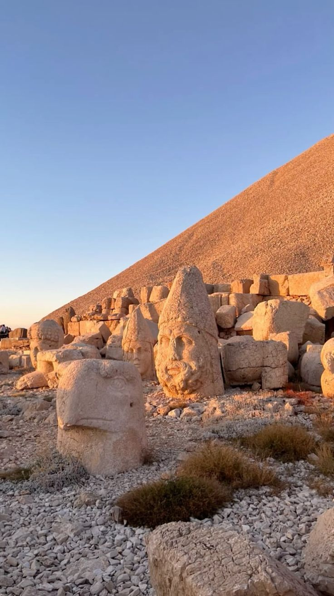
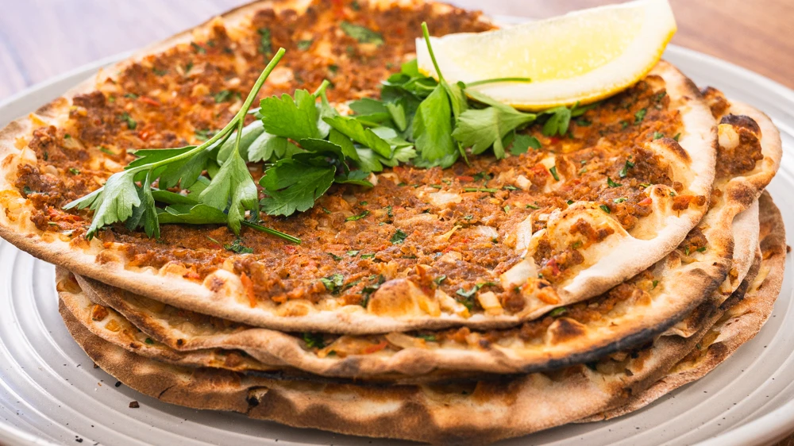
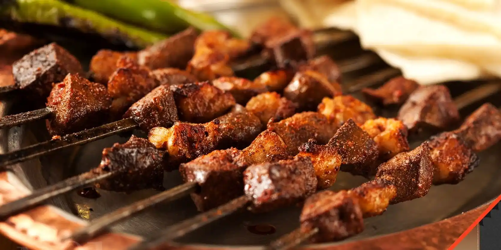
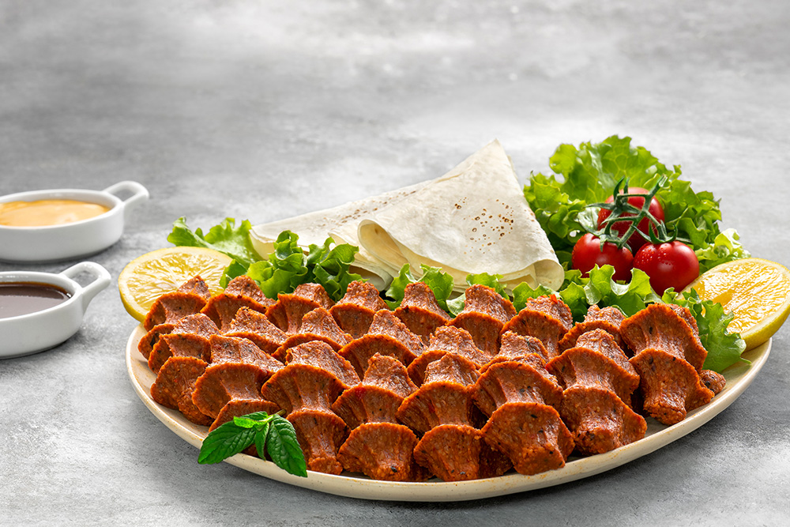

Adıyaman Mutfak Kültürü
Fırat'ın Bereketli Toprakları

Adıyaman, Güneydoğu Anadolu'nun zengin kültürünü yansıtan eşsiz mutfak lezzetleriyle tanınır. Baharatlı yemekleri, etli tatları ve özgün tatlılarıyla damaklarda unutulmaz izler bırakır.
Adıyaman mutfağı; lahmacun, ciğer kebabı, künefe ve meşhur çiğ köftesi gibi yöresel lezzetleriyle gastronomi meraklılarını cezbeder.
- Baharatlı ve yoğun aromalı yemekler
- Et ve kebap çeşitleri
- Yöresel ot ve yeşillik kullanımı
- Tatlılarda özgün tarifler
Öne Çıkan Yemekler ve Mekan Önerileri

Künefe
Tel kadayıf ve özel peynirle hazırlanan, şerbetle buluşan sıcak tatlı.
Nerede Yenir?
- 📠Tatlıhan Künefe
- 📠Adıyaman Künefe Evi
- 📠Fırat Künefe Salonu

Lahmacun
İncecik hamur üzerine baharatlı kıyma harcıyla fırında pişirilen geleneksel lezzet.
Nerede Yenir?
- 📠Ocakbaşı Lahmacun Salonu
- 📠Güney Sofrası
- 📠Lezzet Lahmacun

Ciğer Kebabı
Baharatlarla marine edilip şişe dizilen ve közde pişirilen ciğer lezzeti.
Nerede Yenir?
- 📠Ciğerci Ustam
- 📠Adıyaman Ocakbaşı
- 📠Usta'nın Yeri

Çiğ Köfte
Bulgur, isot ve baharatların yoğrulmasıyla yapılan Adıyaman'a özgü çiğ köfte.
Nerede Yenir?
- 📠Komagene Çiğ Köfte
- 📠Çiğköfteci Ali Usta
- 📠Adıyaman Çiğ Köftecisi